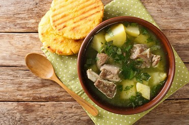

Sancocho Antioqueño
Región Andina · Antioquia
El sancocho antioqueño es una sopa robusta hecha a base de carne de res, costillas o huesos de cerdo, mazorcas de maíz fresco, plátano verde, papa, yuca, cilantro y aliños — todo cocinado a fuego lento hasta lograr un caldo profundo y nutritivo.
La historia de este plato está en el pasado campesino de Antioquia. Los trabajadores del campo tenían la costumbre de cocinar tubérculos y vegetales en caldos espesos — práctica ancestral que fue evolucionando con la incorporación de carnes y nuevos ingredientes traídos por los colonizadores.
Ingredientes
- Carne de res, costillas o huesos
- Mazorcas de maíz fresco
- Plátano verde y yuca
- Papa criolla
- Cilantro, sal y pimienta
Tradición
Hoy el sancocho es sinónimo de reunión familiar en Antioquia. Se prepara en olla grande, a fuego lento, y se comparte en celebraciones, domingos y días de campo. Es el plato que une a las familias alrededor de la mesa.
Cómo se sirve
- Arroz blanco aparte
- Aguacate en rodajas
- Hogao (tomate y cebolla)
- Ají casero al gusto
- Chicharrón como acompañante